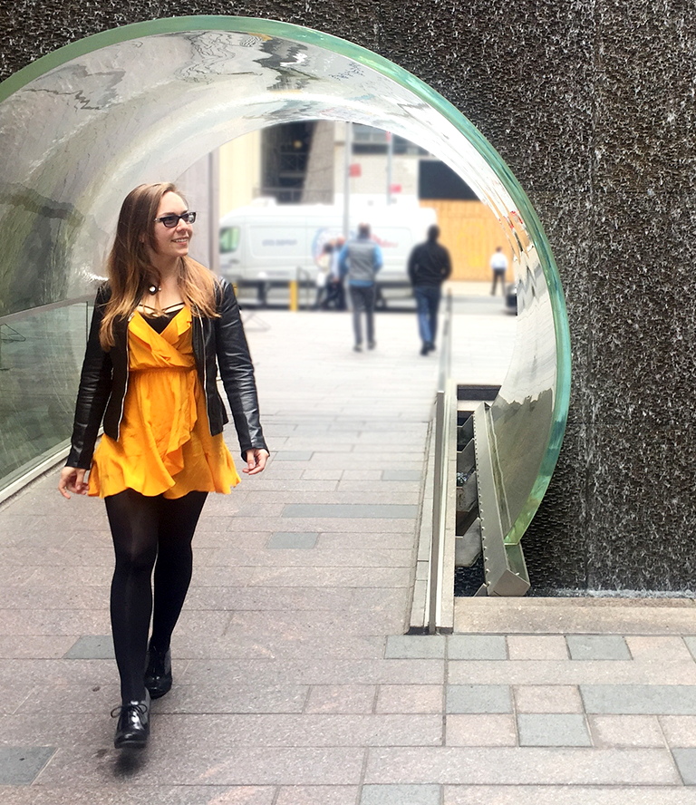
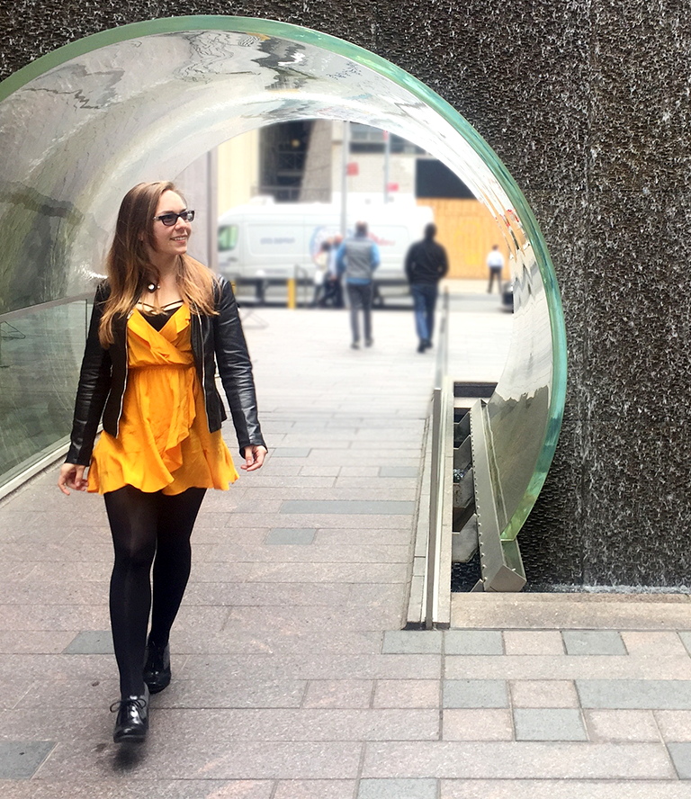

SKILLS
Design
Product Design
UI Design
Web Design
Graphic Design
3D Illustration
Code
HTML
CSS
JavaScript
Ruby on Rails
SQL
WORK
Product Design
I solve problems to make digital products useful, usable, and delightful. Here's an example.
Designing a sorting solution for body measurement tools
Given Problem: A medical research department needs a tool to show their CT scan data to the world.
Actual Problem: [Medical researchers] need to [access the comparison tool for a specific body measurement] so they can [compare a patient to what's "normal" for their age and gender.]
Did this solution work?
Yep! This two-step solution filtered 20+ choices down to 5 +/- 2.
more details!
Web Application Development
I work on every layer of the software stack to make web applications come to life. Here's an example.
Designed and built a web application for the University of Michigan Health System.

How I did it:
Designed and built a relational database that houses several robust tables.
Used data from Heatmap and Google Analytics to make informed design decisions.
Wrote ruby code to keep the app secure and generate webpages on the fly, and uses MVC framework to grab entries from the database and present it to the users.
Made the application interactive by writing ruby so that non-technical internal users could log in and perform CRUD actions on the publications, ramp data, and team members.
Wrote JavaScript for the front-end to calculate, sort, hide/show, and animate.
Built HTML & CSS into an attractive, easy-to-use user interface.
Graphics
I make websites look awesome by creating 3D illustrations and vector graphics. See more on my dribbble.
RÉSUMÉ
EXPERIENCE
Web Designer @ University of Michigan Health System
October 2015 - Present | Ann Arbor, MI
Updated the design of legacy sites, reorganized and simplified the content, and built them into a web application that's easy for non-technical people to update.
Built a relational database that organizes the department's 100+ publications. Also designed and built a web interface to sort, read, add, edit, or delete them.
Designed and developed dynamic pages for the RAMP project, which made it usable, scalable, and maintainable.
Created lifelike 3D imagery and infographics to help the department explain advanced medical concepts to collaborators from non-medical fields.
Multimedia Designer @ University of Michigan Health Management Research Center
December 2014 - October 2015 | Ann Arbor, MI
Improved and maintained the HMRC's website; enhanced usability and increased traffic
Designed products for usability and style, elevated the HMRC's external reputation
Created infographics and imagery that helped explain industry jargon to clients
Designed product logos, icons, stylized imagery, and promotional materials for events
Communicated between tech and creative teams to facilitate collaboration between both parties
Designer @ Hopp App
Summer 2014 | Ann Arbor, MI
Designed the user interface of the mobile application; made it appealing to surveyed users
Created logo, icons, and marketing campaign, which gave the company direction
EDUCATION
Dual Bachelor's Degree in Design & Psychology
University of Michigan
August 2014 | Ann Arbor, MI
Designed and developed a game for iOS that was approved by the Apple Store
Designed and developed a browser game to educate children about type-1 diabetes. It was voted "most addicting game" by our pool of users (out of the 25 games presented)